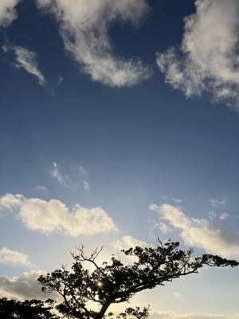

うるがいの話 ある日
最新: めまい【うるがいの話 ある日】とは 一日だけのプログです
『うるがいの話』の最新一日だけのプログで、通信料が少なく経済的だ。カニの画像をクリックすると全ての日付が載る『うるがいの話』サイトを表示します
|
|
【うるがいの話】 うるがい(ｳﾙｶﾞｲ urugai)とは、『もずくがに』の名前でとても大きくなります。 |
|---|---|
|
|
【カミマヤーの話】 猫のことを方言でマヤーといいます。カミマヤー（kamimayaa）とは、神の猫のことです。 |
|
【たながぁの音楽】 たながぁ（ﾀﾅｶﾞｰ tanagaa）とは手長えびのことで、何種類かあり大きいのは車 エビぐらいになります。 |

|
【ぶながぁの話】 ぶながぁ(ﾌﾞﾅｶﾞｰ bunagaa)とは、赤い髪の毛、赤い身体、そして身長は１ｍ２０ｃｍ ぐらい、川の蟹を食べているの目撃された。場所は沖縄県国頭郡大宜味村のと ある村僕の隣近所に住んでいる爺さんから、聞いた話です。 |
|
|
【ギーマの話】 ギーマ(giima)とは、山原の里山に咲くスズランに似た、 花を付けます。実は食べられます、 気が付くと口の周りが紫になっています。 |
2023年12月16日 (土）めまい
14:49

朝５時半過ぎ、木枕に頭を乗せ百回の首振りをしたところ９０回目で平衡感覚
が失われた。すぐに止めて、椅子に座る。ひどいめまいではないが、普通では
ない。令和３年１月にヒドイ眩暈（ 回転性のめまい ）で耳鼻科の病院へ、行
った時以来である。その時処方された薬を飲む、しばらくすると治まってきた
がスッキリではない。昼過ぎ、単行本を読もうと横になって頭の位置を、移動
するとフワフワ、一瞬平衡感覚が無くなる。おー、ただ、ひどくはない。昼過
ぎも薬を飲む尿路結石よりも、心理的に辛いめまいである。なんという身体な
んだろう。ヤンバルでは、生きていけない体だ。
１４時０５分 ビットコインの総資産 ￥１７、４５０（↓１３０）